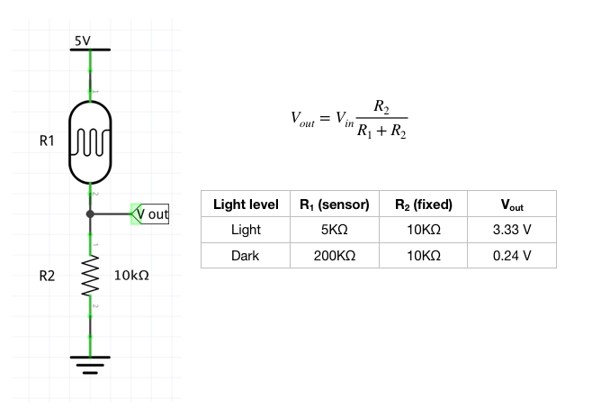

Timothy's Assignment 3!

Hardware
- Arduino Uno
- 2 white LEDs
- 2 330 ohm resistors
- 10k ohm resistor
- Photo resistor
- Hook-up wires
- Breadboard
Serial monitor

Circuit
Schematic
Voltage divider
Code
// Set constants for sensor pin, pin 3 and 5.
const int sensorPin = 0;
const int led1 = 3;
const int led2 = 5;
// Sets variables for level of light: high is 0 (0 Volts) and low is 1023 (5 Volts)
int light, high = 0, low = 1023;
void setup() {
// initialize serial communications at 9600 bps:
Serial.begin(9600);
// Initialize led1 as output
pinMode(led1, OUTPUT);
// Initialize led2 as output
pinMode(led2, OUTPUT);
}
void loop() {
// use analogRead to measure photoresistor pair voltage
light = analogRead(sensorPin);
// if light value is less than low value (1023)
if (light < low) {
Serial.println("Hello darkness my old friend"); // print this message to serial monitor
low = light; // save new low value as light value
}
// if light value is greater than low value (0)
if (light > high) {
Serial.println("Here comes the sun"); // print this message to serial monitor
high = light; // save new high value as light value
}
// analogRead function returns values between 0 and 1023 but analogWrite wants values between 0 and 255.
// So we use the map function to "convert" from the higher range to the smaller range
light = map(light, low+40, high-40, 0, 255);
// limits light to between 0 and 255
light = constrain(light, 0, 255);
// Now we'll return to the main loop(), and send light
// to the LED.
delay(50);
// brightens led1 when dark
analogWrite(led1, 255-light);
// brightens led2 when light
analogWrite(led2, light);
}